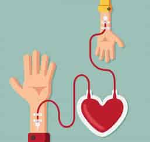

Pots donar sang si tens entre 18 i 70 anys
Has de pesar mes de 50Kg
t’has de trobar be de salut (no pots tenir ni ViH ni hepatitis B i C)
les dones poden dona fins a 3 cops a l’any i els homes 4, entre donació i donació han de passar un mínim de 2 mesos
